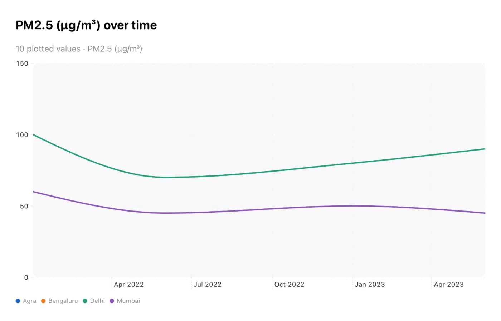
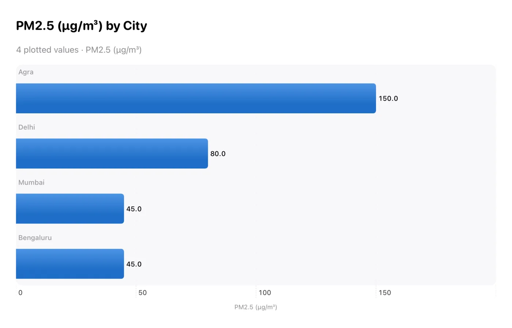
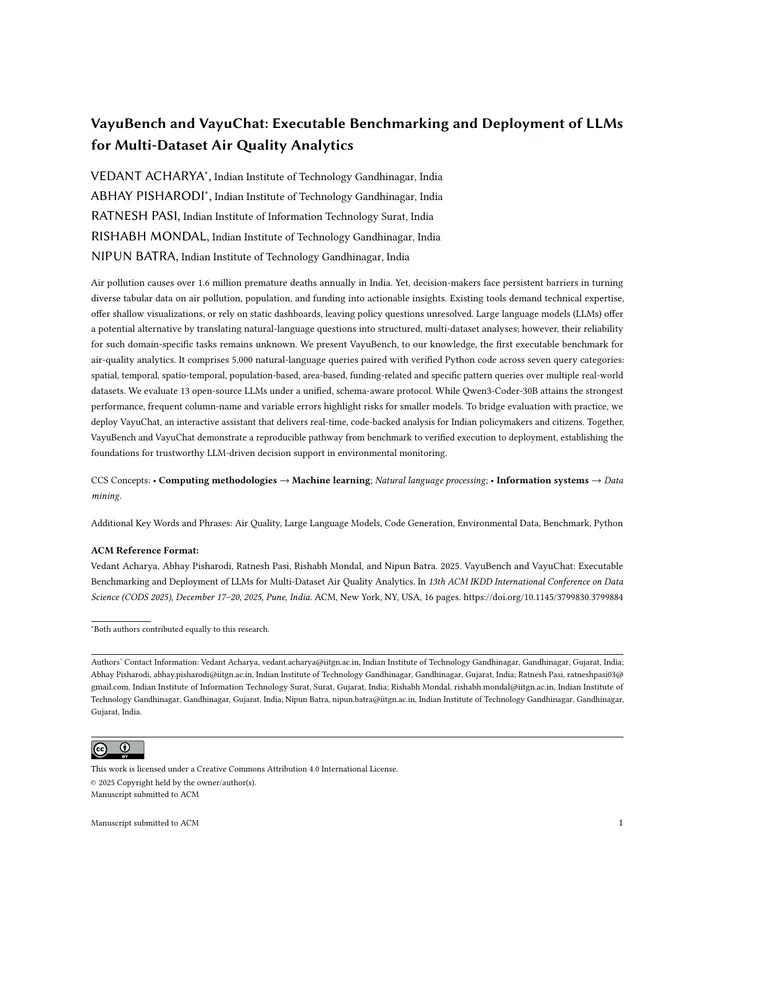

Direct answer example
How many cities are covered?
50 with the local plan available for inspectionLocal AI · Indian air-quality data
VayuChat turns plain-language questions into verified analysis. The model makes a compact plan; native code checks it, computes the result, and draws the chart.
Native apps run without cloud inference or an Internet permission.
["c", null, "city", "cities"]Computed from the bundled dataset. The model never invents the number.
01 · How it works
This separation keeps the language model short, fast, and inspectable. It also means a fluent sentence cannot quietly substitute for a calculation.
City rankings, pollutant trends, comparisons, rolling averages, tables, and plots.
“Plot monthly PM2.5 for Delhi in 2023”
A fine-tuned 270M model emits a constrained, low-token analysis plan.
op · filter · group · metric · output
Unknown cities, pollutants, dates, columns, and malformed plans fail closed.
schema ✓ city ✓ range ✓
Swift or Kotlin executes the plan over bundled data and renders the native result.
answer · table · bar · line · scatter
02 · Outputs
Not every question wants another paragraph. VayuChat returns the form that lets you inspect the result.

How many cities are covered?
50 with the local plan available for inspection“Plot PM2.5 for Gotham in 2032”
Outside available dataChoose a covered city and a date between 2017 and 2025.

Watch it work
See direct answers, native tables, and plots. Then try the hosted research system or the browser-local prototype yourself.

03 · Get VayuChat
The native pilots bundle the planner and data. Questions, intermediate plans, and results remain on the device unless you explicitly share them.
The Android APK is a direct-testing alpha rather than a Google Play release. Its published SHA-256 begins ddea9843.
04 · Research evidence
The paper explains the benchmark and deployment decisions behind VayuChat. It supports the product; it does not have to be the product.

Primary paper · CODS 2025
VayuBench pairs natural-language questions with verified programs and checks both execution and answer correctness. The paper evaluates open models under one schema-aware protocol, then follows the work through to a deployed conversational system.
@inproceedings{acharya2025vayubench,
title={VayuBench and VayuChat: Executable Benchmarking and Deployment of LLMs for Multi-Dataset Air Quality Analytics},
author={Acharya, Vedant and Pisharodi, Abhay and Pasi, Ratnesh and Mondal, Rishabh and Batra, Nipun},
booktitle={13th ACM IKDD International Conference on Data Science},
year={2025},
doi={10.1145/3799830.3799884}
}